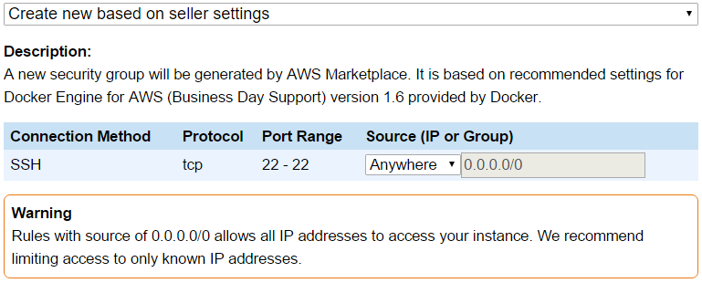

Install Docker Engine for AWS AMI (BDS)
This article walks you through the following steps to launch the Docker Engine for AWS (Business Day Support) AMI as an EC2 instance in the Amazon Web Services (AWS) cloud:
- Locate the Docker Engine for AWS (Business Day Support) AMI
- Deploy with 1-Click Launch
- Connect to the Docker Engine
- Confirm the Docker Engine is running
- Configure Docker Engine for AWS to use Docker Trusted Registry for AWS
- Push a Docker image to your Docker Trusted Registry for AWS
The Docker Engine for AWS (Business Day Support) AMI launches an instance of the commercially supported Docker Engine. Upgrading the Docker Engine to a non commercially supported version is not supported. This AMI requires the use of Docker Trusted Registry for AWS (Business Day Support) to maintain a supported configuration.
To learn more about Docker Engine for AWS visit our AWS Documentation.
You can refer to the overview to see additional information on the general install process.
Prerequisites
You can locate, install, and launch the AMI from the Amazon AWS Marketplace, or with the AWS EC2 Console by selecting the AMI from the “Launch Instance” dialog. Both the AWS Marketplace and the AWS EC2 Console require that you have an AWS account to launch the AMI.
If your account is supplied through your company, your company’s administrator must have given you permissions to launch EC2 instances. If you receive a permissions error when following these instructions, contact your AWS administrator for help.
Install procedure
These instructions show you how to locate, install, and launch the Docker Engine from Amazon’s AWS Marketplace. The AWS Marketplace allows you to do a “1-Click Launch” or “Manual Launch”.
The Manual Launch allows you to launch using the AWS EC2 Console. It allows for fine control of EC2 instance settings such as:
- Instance type
- VPC settings
- Storage
- Instance tags
- Security Group settings
The 1-Click Launch is quicker, provides default values for most settings, and dynamically updates the Cost Estimator. This install shows you how to do a 1-Click Launch. The entire process should take about 20 minutes to complete.
Locate the Docker Engine for AWS (Business Day Support) AMI
If you haven’t already done so, open your browser to the Amazon Marketplace.
Search the Marketplace for “Docker Engine for AWS (Business Day Support)”.
Select the “Docker Engine for AWS (Business Day Support)” AMI from the list of results.
The Marketplace entry provides details on the product.
Press “Continue” to move to the launch step.
If you are not logged into AWS, the system prompts you to.
Enter your AWS login credentials.
When your login succeeds, the browser displays the “Launch on EC2” page.
Make sure that the “1-Click Launch” tab is selected.
Deploy with 1-Click Launch
You can deploy the Docker Engine AMI to an Instance in a private or public subnet. A private subnet provides added security but also prevents your Docker Engine instance from being directly addressable on the internet. If you choose to deploy to a private subnet, you may need to access your Docker Engine instance via a Bastion host or a management instance within your VPC.
These instructions launch an EC2 instance into a public subnet with a public IP, so that gaining access to it in the “Connect to the Docker Engine” section is simplified.
The following steps walk you through the 1-Click Launch settings:
From the “Software Pricing” box, select a “Subscription Term” and an “Applicable Instance Type.”
These two options contribute to the overall cost of running your choice of EC2 instance. The combination of these two fees make up the running costs of your EC2 instance, and are shown in the “Cost Estimator” box. Make sure you understand these costs before launching your instance.
Select the version you want to deploy from the list of available versions.
Select the Region you want to deploy to from the “Region” dropdown.
Select the VPC and Subnet you want to deploy to from the “VPC” and “Subnet” dropdowns.
From the Security Group box, select “Create new based on seller settings”.

This option has security implications. It allows incoming connections to the listed ports from any host or IP address. You should lock this down in line with your existing AWS security policies.
Select an existing or add a new key pair using the “Key Pair” box.
If you choose to use an existing key pair, be sure to choose one that you have access to, as this cannot be changed after the instance is launched.
Review your choices and check the values in the Cost Estimator.
Changing your selected Region and VPC settings can cause your selected EC2 instance type to reset to the default value of “m3.medium”.
If you are happy with your configuration and estimated charges, click “Launch with 1-Click”.
Go to the EC2 Dashboard to view your instance.
Connect to the Docker Engine
You administer your Docker Engine using the docker command line tool. You can run the docker command line tool directly from your Docker Engine EC2 Instance, or remotely from another machine with network connectivity to your Docker Engine EC2 Instance. These instructions administer the Docker Engine directly from the Docker Engine EC2 Instance.
To connect to the command line of your Docker Engine EC2 Instance:
Log into the AWS Console.
Go to the EC2 Dashboard.
Choose the “Running Instances” option.
Right-click your Docker Engine EC2 Instance and choose “Connect”.
Copy and paste the “Example:” command into a terminal window.
Change the username from “root” to “ec2-user”.
After changing the username from “root” to “ec2-user”, the command should look like the following:
$ ssh -i <key-pair> ec2-user@52.27.119.45
The will reflect the name of the key pair you launched the instance with and the IP address will match the IP of your Docker Engine EC2 Instance.
Press Return.
Connecting to the Docker Engine EC2 Instance will gnerate and authentication warning. This is expected behavior and you can continue.
If you’re connecting from a Windows machine, you’ll need to have an SSH client isntalled and in your PATH variable.
For more information about connecting to your Docker Engine EC2 Instance over SSH, right-click your EC2 Instance and choose “Connect”.
Confirm the Docker Engine is ready to use
The Docker daemon is configured to automatically start with your Docker Engine EC2 Instance.
Run the docker version command from the command line of your Docker Engine EC2 Instance:
$ sudo docker version
Client version: 1.6.2-cs5
Client API version: 1.18
Go version (client): go1.4.2
Git commit (client): 9c454bd
OS/Arch (client): linux/amd64
Server version: 1.6.2-cs5
Server API version: 1.18
Go version (server): go1.4.2
Git commit (server): 9c454bd
OS/Arch (server): linux/amd64
If you get a “FATA[0000]” error for the server portion of the output, make sure you are using sudo at the beginning of the command. If you are using sudo and still get the error, check the status of the Docker service with the sudo service docker status command, and try restarting the service with the sudo service docker restart command.
Configuring the Docker Engine to use Docker Trusted Registry
This section of the guide walks you through the steps to configure Docker Engine for AWS to use Docker Trusted Registry for AWS as its image registry.
This guide assumes you have a working version of Docker Trusted Registry for AWS running in your AWS VPC at “ec2-52-24-229-123.us-west-2.compute.amazonaws.com”. You will need to substitute this value with the correct value for your environment for the remainder of this guide.
For information on installing Docker Trusted Registry for AWS, see our AWS Documentation.
Note: Docker Trusted Registry is only supported with the commercially supported Docker Engine. For more information see the online compatibility matrix.
Save the Domain name of your Docker Trusted Registry for AWS service to an environment variable:
$ export DOMAIN_NAME=ec2-52-24-229-123.us-west-2.compute.amazonaws.com
Don’t forget to substitute the Domain name in the command above with the correct domain name in your environment.
Retrieve the certificate from your Docker Trusted Registry server and store it locally on the Docker Engine for AWS EC2 Instance:
$ sudo openssl s_client -connect $DOMAIN_NAME:443 -showcerts </dev/null 2>/dev/null | openssl x509 -outform PEM | sudo tee /usr/local/share/ca-certificates/$DOMAIN_NAME.crt
Add the retrieved certificate as a trusted root:
$ sudo update-ca-certificates
Restart the Docker service:
$ sudo service docker restart
Your Docker Engine for AWS EC2 Instance is now configured to be able to push and pull images to your instance of Docker Trusted Registry for AWS.
Push a Docker image to your Docker Trusted Registry for AWS
You push and pull images to Docker Trusted Registry using the normal docker push and docker pull commands.
The following steps walk you through the process of pulling an image from Docker Hub, pushing that same image to your Docker Trusted Registry, and then pulling it back from your Docker Trusted Registry.
This guide assumes your Docker Trusted Registry is reachable at “ec2-52-24-229-123.us-west-2.compute.amazonaws.com”. You will need to substitute this value with the DNS name of your own Docker Trusted Registry. All commands are ran from your Docker Engine for AWS EC2 Instance.
Pull a Docker image from Docker Hub with the docker pull command:
$ sudo docker pull busybox
latest: Pulling from busybox
cf2616975b4a: Pull complete
79722f6accc3: Pull complete
0f864637f229: Pull complete
busybox:latest: The image you are pulling has been verified. Important: image verification is a tech preview feature and should not be relied on to provide security.
Digest: sha256:c451012efb6e79b9cf93f48a326a195acfcdf01cadf4271d678d03e031c214d3
Status: Downloaded newer image for busybox:latest
Verify the image is stored locally with the docker images command:
$ sudo docker images
REPOSITORY TAG IMAGE ID CREATED VIRTUAL SIZE
busybox latest 0f864637f229 2 days ago 2.433 MB
Tag the image for storage in your Docker Trusted Registry using the docker tag command:
$ sudo docker tag 0f864637f229 ec2-52-24-229-123.us-west-2.compute.amazonaws.com/devops/busybox:0.1
This will tag the local busybox image (0f864637f229) so that it can be pushed to the “devops” repository in your Docker Trusted Registry at “ec2-52-24-229-123.us-west-2.compute.amazonaws.com”. Don’t forget to substitute the image ID (0f864637f229) and the domain anme of the Docker Trusted Registry with the appropriate values for your environment.
Log in to the Docker Trusted Registry with the docker login command:
$ sudo docker login ec2-52-24-229-123.us-west-2.compute.amazonaws.com
By default, Docker Trusted Registry requires you to login before you can push and pull images. It is recommended that you create user accounts with the appropriate permissions on the “Settings” > “Auth” tab in the Docker Trusted Registry Administration web interface.
Push the local tagged BusyBox image to your Docker Trusted Registry with the docker push command:
$ sudo docker push ec2-52-24-229-123.us-west-2.compute.amazonaws.com/devops/busybox
The push refers to a repository [ec2-52-24-229-123.us-west-2.compute.amazonaws.com/devops/busybox] (len: 1)
0f864637f229: Image already exists
79722f6accc3: Image successfully pushed
cf2616975b4a: Image successfully pushed
Digest: sha256:06a01d4fc44fd4d3fb9fbb808e337822b2af3a97ca1ffdde7c0548eae33d3fec
Delete the local copies of the “busybox” image from the Docker Engine EC2 Instance using the docker rmi command:
$ sudo docker rmi -f 0f864637f229
You may need to run the command above command twice. The first time you run the command, it deletes the tagged image we created earlier with the docker tag command. The second time you run the command it deletes the image pulled from Docker Hub.
Verify there are no local copies of the “busybox” image:
$ sudo docker images
REPOSITORY TAG IMAGE ID CREATED VIRTUAL SIZE
Pull a copy of the busybox image from your Docker Trusted Registry:
$ sudo docker pull ec2-52-24-229-123.us-west-2.compute.amazonaws.com/devops/busybox:0.1
0.1: Pulling from ec2-52-24-229-123.us-west-2.compute.amazonaws.com/devops/busybox
cf2616975b4a: Pull complete
79722f6accc3: Pull complete
0f864637f229: Already exists
Digest: sha256:06a01d4fc44fd4d3fb9fbb808e337822b2af3a97ca1ffdde7c0548eae33d3fec
Status: Downloaded newer image for ec2-52-24-229-123.us-west-2.compute.amazonaws.com/devops/busybox:0.1
Verify that the image is now stored locally:
$ sudo docker images
REPOSITORY TAG IMAGE ID CREATED VIRTUAL SIZE
ec2-52-24-229-123.us-west-2.compute.amazonaws.com/devops/busybox 0.1 0f864637f229 2 days ago 2.433 MB
You have now successfully deployed the Docker Engine for AWS (Business Day Support) AMI and configured it to work with Docker Trusted Registry for AWS (Business Day Support).
Next Steps
For more information on using Docker Enginer in AWS, visit our AWS Documentation.
See also